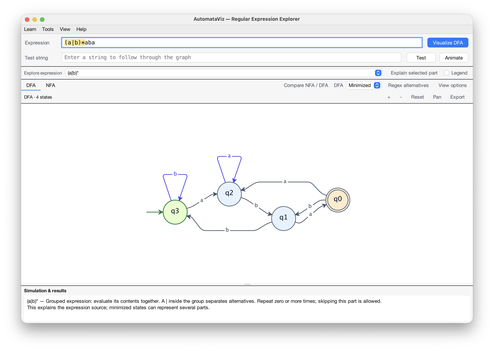
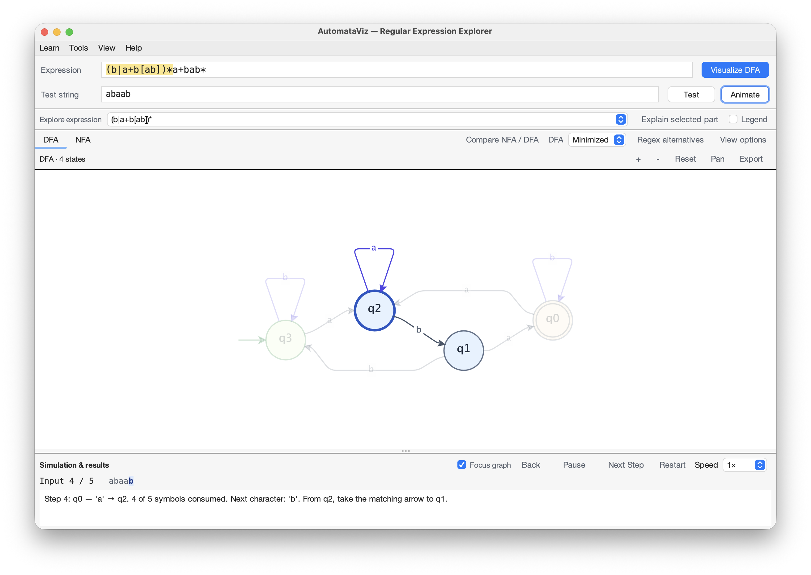
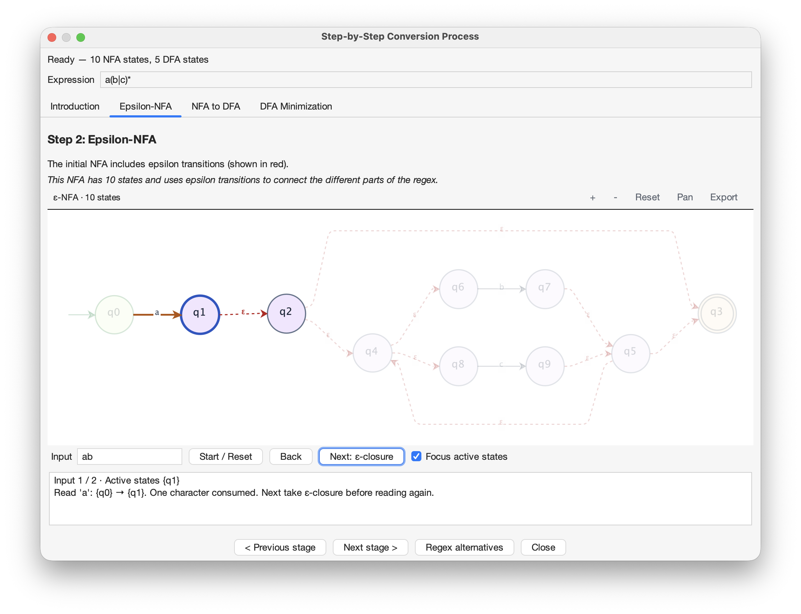
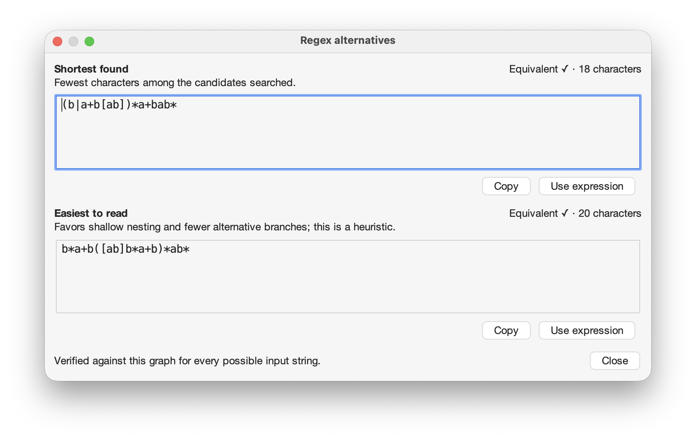

Learn automata
by exploring them.
AutomataViz is a free desktop tool for studying regular expressions and finite automata.
Construct a machine, trace an input, and inspect how an ε-NFA becomes a DFA and a minimized DFA.
Download and installTry a learning activity
Java 11 or newer. Available for macOS, Windows, and Linux.


Screenshots from the macOS application.
Download and install
Run AutomataViz on your computer with a desktop Java 11 or newer runtime.
Get AutomataVizThis is a development build. Behavior may change as the project evolves.
Run the application
Install Java 11 or newer, download the JAR, and open a terminal in its folder.
java -jar AutomataViz.jarVerify the download
SHA-256
4e9c5962136b5ffb62087c6ac3974f09df676889bb5f2ebbdfec59f81b8bb06fBuild from source
Clone the repository and run mvn clean package. Maven is required to build the source.
Supported expression syntax
Use literals, |, *, +, ?, parentheses, character classes, and escaped punctuation. Shorthand classes such as \d, anchors, and counted repetitions are not supported.
Explore automata theory
Connect the expression you write with the states that recognize it. Each conversion preserves the accepted language.
Regular expression
Describe a language with symbols, alternatives, and repetition.
ε-NFA
See how Thompson’s construction connects the parts of an expression.
DFA
Inspect the set of NFA states represented by each deterministic state.
Minimized DFA
Find equivalent states and understand why they can be merged.
Edit transitions, pan and zoom through larger graphs, and see the corresponding expression change as you reconnect the machine.
Watch an input move through the graph
Enter a test string and select Animate. A moving marker follows each transition while the active state, input position, and explanation update together.


Control the pace
- Pause and resume
- Stop at a transition to inspect it, then continue automatic playback.
- Back and Next Step
- Revisit an earlier state or advance one input symbol at a time.
- Restart and speed
- Replay the input from the start. Choose 0.5×, 1×, or 2× playback speed.
- Focus graph
- Fade unrelated transitions to follow the current state. Turn it off to keep the complete graph visible.
Understand the result, not just the path
Reaching a double-ring state is only enough when the entire input has been consumed. Playback explains acceptance or rejection, including missing transitions, symbols outside the alphabet, and paths into dead states.
In the rejection screenshot, abaab finishes in q1, a non-accepting state. All five symbols were read, but the string is rejected.
Learning activities
Move forward and backward through an input. Separate ε-closure from symbol moves, inspect active states, and understand acceptance and rejection.
Explore the walkthrough screenshot ↗Investigate a conversion
Use a(b|c)* with input ab. In the ε-NFA stage, compare a symbol move with ε-closure. Which step consumes input? Then inspect the NFA states grouped into each DFA state.


Compare equivalent expressions
Graph edits can produce a long regex. Compare “Shortest found” with “Easiest to read,” then copy or use the expression you prefer.


Checked against the graph
Each alternative includes its character count and an exact language-equivalence check for every possible input string.
The search does not guarantee the globally shortest regex. Readability is evaluated with a heuristic.
View the alternatives screenshot ↗